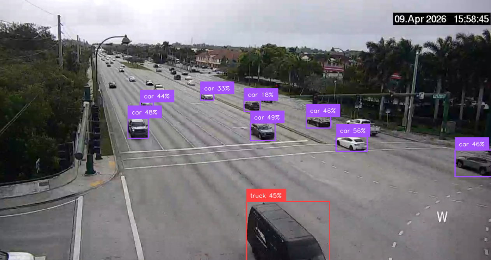
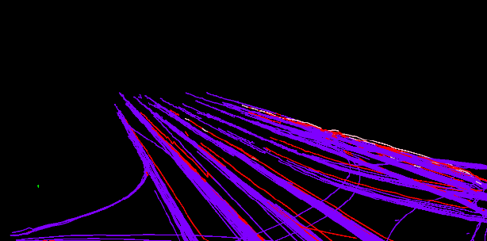
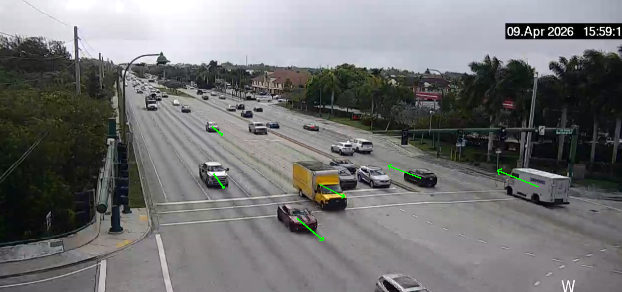

object detection
I was messing around in Python and found some object detection packages and decided that it would be interesting to see how cars behave at intersections.
I made a small script that would place bounds around cars and classify them. Using this you could make motion maps, trails marking where cars were going, heatmaps (not pictured), and calculate traffic flow statistics.

Some occlusion happens while detecting images however most of the time each car was tracked during at least one certain epoch and it can be configured to tag cars in the case that it stops tracking them for a moment and would then reclassify them as the original vehicle (as to not create duplicates). The numbers next to the labels are confidence scores.

By showing the paths each car took you can get nice looking trails. When I took this picture the script was only running for a few minutes but it does give information on how busy certain lanes are. If I utilized the concentration of paths per area and colorized it would make a very nice representation of traffic flow.

I thought this one was pretty neat although I do not really have a use for it now. Perhaps it could be used to analyze cars that are moving against the flow of traffic or to use it similar to a speed camera and see what is the average speed moving through a zone.

Using a slightly heavier model as opposed to yolov8l-worldv2 (I could do this due to it being a pre-recorded video), I thought that rtdetr-x handled this task very well. The red box on the right side counts how many tracked individuals are in the square. Maybe this could later be used for occupancy checking of a parking lot.
Overall I thought it was a pretty neat project to mess around with. I am considering recording real life footage of a parking lot and making a occupancy monitor during a busy time. Making an ALPR using a handheld camera would also be an interesting challenge.